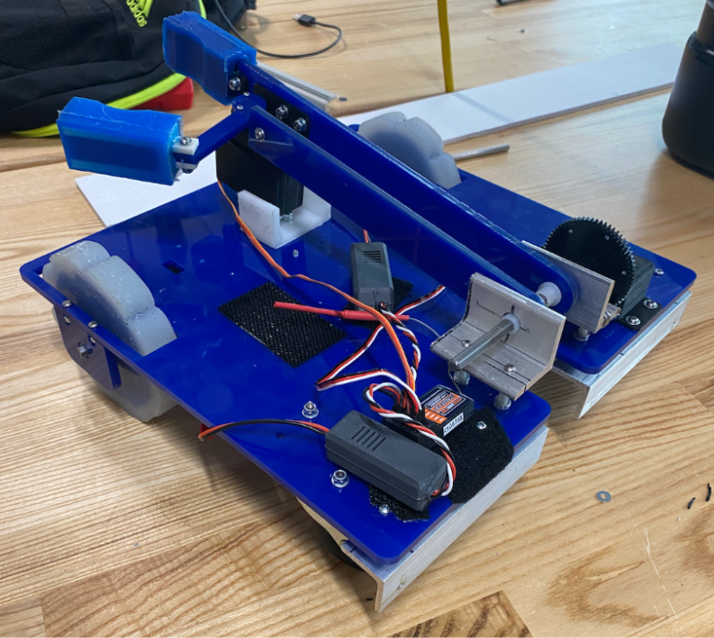
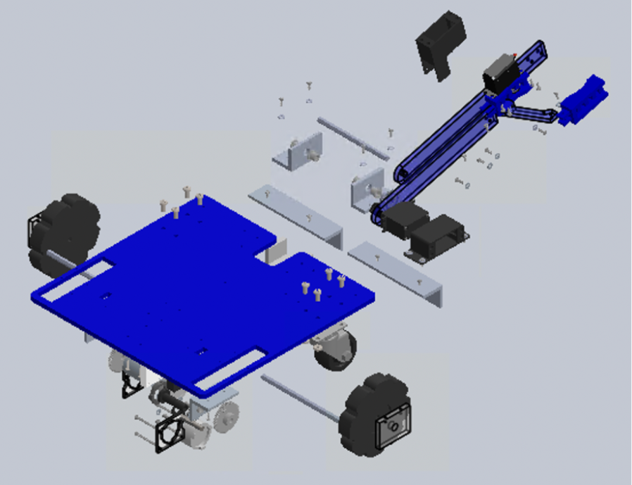
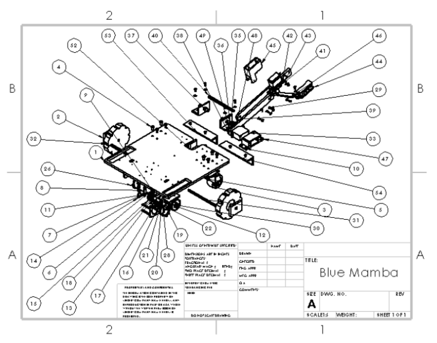

Project Overview
ES51: Computer-Aided Machine Design is Harvard's foundational engineering design course that challenges students to apply principles of mechanical design, electronics, and programming to create functional robots. Our team designed and built an all-terrain RC vehicle capable of autonomous navigation and object manipulation.
The vehicle featured a robotic arm system designed to grab balls and cubes, raise them to different heights, and place them precisely onto scoring podiums. The competition format awarded points based on the number and accuracy of objects successfully placed, requiring both mechanical precision and strategic design.
Key Features
- Fully custom-built chassis, arm, grabber, and wheels — nothing off the shelf
- Dragon Skin silicone rubber wheels, cast in-house for maximum grip on varied terrain
- Custom grabber designed and fabricated by the team for reliable object capture
- Drive motors and gears salvaged and repurposed from an old power drill
- Multi-degree-of-freedom robotic arm with precise positioning for scoring podiums
- Optimized for speed and scoring efficiency in competition
Technical Design
CAD: Designed all custom components — chassis, arm, grabber, and wheel moulds — in SolidWorks, building parametric assemblies and engineering drawings for each part before it was made. The course emphasised the discipline of designing for manufacture: running interference checks, specifying tolerances, and rethinking geometry when a first prototype revealed problems on the machine. CAD was not a one-time step but a continuous loop — parts were revised in SolidWorks, remade, tested, and revised again throughout the project.
Workshop & Fabrication: ES51 functions as Harvard's introduction to the engineering workshop — students are trained on the machines before designing parts they'll make on them. The curriculum covered CNC milling for precision metal work, laser cutting for flat-pattern parts from sheet stock, and FDM 3D printing for rapid prototyping of complex geometry. Dragon Skin silicone rubber wheels were cast in-house using a two-part mould: liquid silicone was mixed, poured, and demoulded after cure. The drive motors and gearbox came from a disassembled power drill — stripped, cleaned, and remounted into a custom chassis bracket for differential steering.
Mechanical: The chassis was designed around a low centre of gravity, with all mounting points for the drivetrain, arm pivot, and electronics laid out in SolidWorks before any material was cut. The arm used a multi-link mechanism to achieve the reach and lift height needed to place objects onto scoring podiums at varying heights. The grabber was designed to close passively on contact with both balls and cubes — the two object types in the competition — without requiring the operator to switch between grip modes during a run.
Software: A microcontroller served as the central control unit, receiving input from the RC receiver and translating commands into coordinated motion across the drivetrain and arm. Custom code managed the sequencing of scoring runs — drive to position, lower arm, close grabber, raise, drive to podium, extend, release — with timing tuned through repeated competition practice. The control architecture was kept modifiable so the team could adjust scoring strategy between rounds based on what was working.
Gallery



